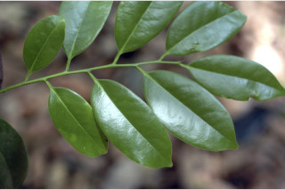
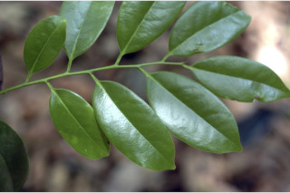

Images :

 



| Habit : | Trees up to 25 m tall. |
| Leaves : | Leaves simple , alternate , distichous ; petiole to 0.7-1.7 cm long, canaliculate , glabrous ; lamina 5-12 x 2.5-6 cm, usually narrow oblong to elliptic-oblong , apex acuminate with blunt tip, base acute to attenuate , coriaceous , glabrous ; midrib canaliculate ; secondary_nerves 6-10 pairs; tertiary_nerves reticulate and prominent when dry. |
| Inflorescence / Flower : | Flowers unisexual , dioecious ; male flowers usually in 3 axillary cymes ; female solitary , axillary . |
| Fruit and Seed : | Berry , globose , to 6 cm across, apiculate , glabrous ; fruiting_calyx flat, woody with reflexed lobes ; seeds 6-8. |